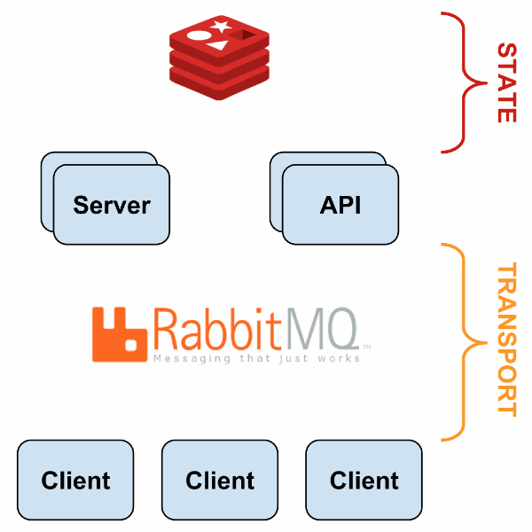
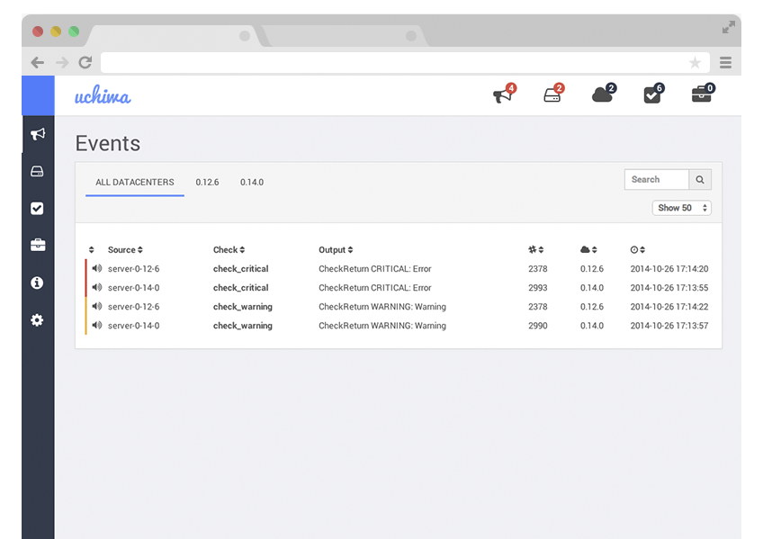

Full stack monitoring using Sensu
Lakshmi Narasimhan
@lakshminp
About me
full stack developer
been doing devops before it was termed "devops"
Intro
You need to monitor your stack, like NOW.
The open source monitoring landscape
But why Sensu?
Sensu architecture

Dashboards
Uchiwa

Graphite
Graphana
Sensu components
Checks
Handlers
Filters
Mutators
Sensu API
plugins
Event handlers
email, SMS and the whole 9 yards
Custom handlers
The ecosystem
Lots of plugins
http://sensu-plugins.io/
commercial flavour
New products
Amon
https://www.amon.cx/
Examples and use cases
Webapp
Big data stack
Containers
Resources
The art of monitoring book
https://www.artofmonitoring.com/
Deploy Sensu using Ansible
?s